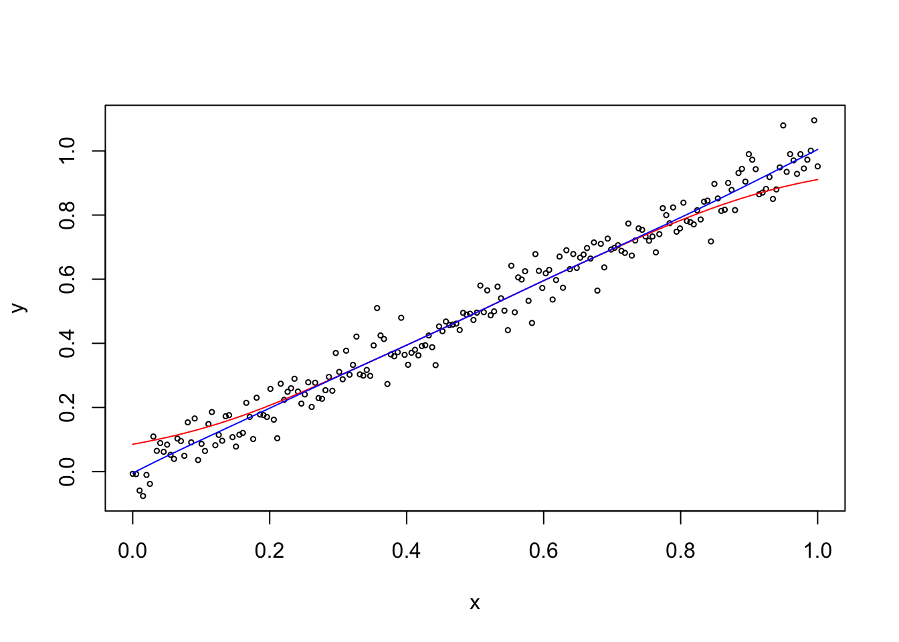
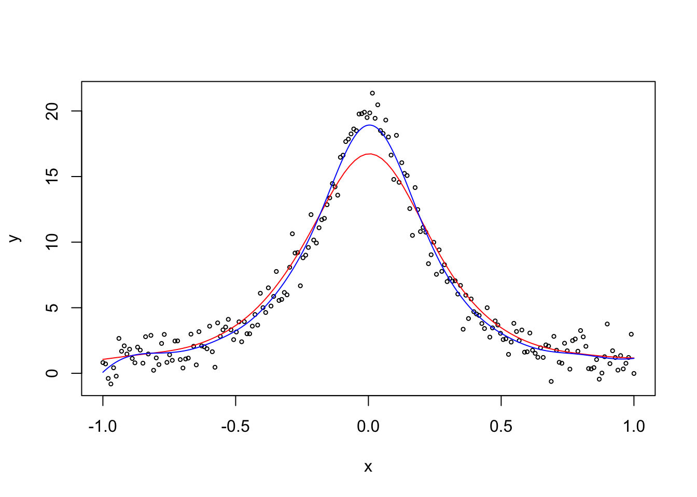

Section 6 Local Polynomial Regression
Local polynomial regression is a generalisation of the Nadaraya-Watson estimator. The method combines the two ideas of linear regression with weights and polynomial regression. The aim is still to estimate the model mean \(m \colon\mathbb{R}\to \mathbb{R}\) from given data \((x_1, y_1), \ldots, (x_n, y_n)\).
6.1 Linear Regression with Weights
In the level 3 part of the module, we introduced the least squares method for linear regression. This method estimartes the regression coefficients by minimising the residual sum of squares: \[\begin{align*} r(\beta) &= \sum_{i=1}^n \hat\varepsilon_i^2 \\ &= \hat\varepsilon^\top \hat\varepsilon. \end{align*}\] Here we will extend this method to include weights for the observations. Given weights \(w_1, \ldots, w_n > 0\), the weighted least squares method minimises \[\begin{equation*} r_w(\beta) = \sum_{i=1}^n w_i \varepsilon_i^2. \end{equation*}\] In matrix notation, this function can be written as \[\begin{align*} r_w(\beta) = \varepsilon^\top W \varepsilon = (y - X \beta)^\top W (y - X \beta), \end{align*}\] where \(W\) is a diagonal matrix with the weights on the diagonal: \[\begin{equation} W = \begin{pmatrix} w_1 & 0 & 0 & \cdots & 0 \\ 0 & w_2 & 0 & \cdots & 0 \\ 0 & 0 & w_3 & \cdots & 0 \\ \vdots & \vdots & \vdots & \ddots & \vdots \\ 0 & 0 & 0 & \cdots & w_n \end{pmatrix}. \tag{6.1} \end{equation}\] Similar to lemma 2.1 in the level 3 notes, we can take derivatives to find the minimum of \(r_w\). The result is \[\begin{equation*} \hat\beta = (X^\top W X)^{-1} X^\top W y. \end{equation*}\]
Since \(W\) appears once in the inverse and once before the \(y\), we can multiply \(W\) by any number without changing the result. Thus we don’t need to “normalise” the weights \(w_i\) to sum to one.
As before, the fitted value for inputs \((\tilde x_1, \ldots, \tilde x_p) \in \mathbb{R}^p\) is given by \[\begin{equation*} \hat\beta_0 + \hat\beta_1 \tilde x_1 + \cdots + \hat\beta_p \tilde x_p = \tilde x^\top \hat\beta, \end{equation*}\] where \(\tilde x = (1, \tilde x_1, \ldots, \tilde x_n)\).
6.2 Polynomial Regression
In these notes we only consider the case of \(p=1\). In this case we can easily fit a polynomial of degree \(p\) to the data by using \(x, x^2, \ldots, x^p\) as the input variables. The corresponding model is \[\begin{equation*} y = \beta_0 + \beta_1 x + \beta_2 x^2 + \cdots + \beta_p x^p + \varepsilon. \end{equation*}\] This leads to the design matrix \[\begin{equation*} X = \begin{pmatrix} 1 & x_1 & x_1^2 & \cdots & x_1^p \\ 1 & x_2 & x_2^2 & \cdots & x_2^p \\ \vdots & \vdots & \vdots & \ddots & \vdots \\ 1 & x_n & x_n^2 & \cdots & x_n^p \end{pmatrix}. \end{equation*}\]
Example 6.1 To illustrate polynomial regression, we fit a third-order polynomial
to a simple, simulated dataset. Since the operator ^ has a special
meaning inside lm(), we have to use the function I() (which disables
the special meaning of + and ^ for its arguments) when computing
the inputs \(x^2\) and \(x^3\).
set.seed(20211102)
n <- 40
x <- seq(0, 10, length.out = n)
y <- cos(x) + rnorm(n, sd = 0.5)
m <- lm(y ~ x + I(x^2) + I(x^3))
plot(x, y)
lines(x, fitted(m))
The resulting regression line seems like a resonable fit for the data. We note that a third-order polynomial grows very quickly to \(\pm\infty\) as \(|x|\) increases. Thus, the fitted model cannot be used for extrapolating beyond the range of the data.
When the regression is set up in this way, the design matrix often suffers from collinearity. To check for this, we can consider the condition number \(\kappa\). For the example above we get the following value:
kappa(m)## [1] 2813.242This is a large value, indicating collinearity. To improve the setup of the problem we can use the model \[\begin{equation*} y = \beta_0 + \beta_1 (x - \tilde x) + \beta_2 (x - \tilde x)^2 + \cdots + \beta_p (x - \tilde x)^p + \varepsilon, \end{equation*}\] where \(\tilde x\) is inside the interval if \(x\) values. This leads to the design matrix \[\begin{equation} X = \begin{pmatrix} 1 & (x_1-\tilde x) & (x_1-\tilde x)^2 & \cdots & (x_1-\tilde x)^p \\ 1 & (x_2-\tilde x) & (x_2-\tilde x)^2 & \cdots & (x_2-\tilde x)^p \\ \vdots & \vdots & \vdots & \ddots & \vdots \\ 1 & (x_n-\tilde x) & (x_n-\tilde x)^2 & \cdots & (x_n-\tilde x)^p \end{pmatrix}. \tag{6.2} \end{equation}\]
Example 6.2 Continuing from the previous example, we can see that writing the model as in
(6.2) greatly improves the condition number:
x.tilde <- 5
m2 <- lm(y ~ I(x-x.tilde) + I((x-x.tilde)^2) + I((x-x.tilde)^3))
kappa(m2)## [1] 65.75674While there is still collinearity, the condition number is now much smaller.
Polynomials of higher degree take very large values as \(|x|\) increases. These polynomials are best used for local interpolation of data. In contrast, polynomials of higher degree often make poor global models.
6.3 Polynomial Regression with Weights
The idea of local polynomial regression is to combine polynomial regression with weights which give more weight to close by observations: to get an estimate at a point \(\tilde x \in \mathbb{R}\), we define \[\begin{equation*} w_i := K_h(\tilde x - x_i), \end{equation*}\] where \(K_h\) is a scaled kernel function as before. Using the diagonal matrix \(W\) from (6.1) for the weights and the matrix \(X\) from (6.2) as the design matrix, we can fit a polynomial of degree \(p\) to the data which fits the data near \(\tilde x\) well. The regression coefficients are again estimated as \[\begin{equation*} \hat\beta = (X^\top W X)^{-1} X^\top W y \end{equation*}\] and the model mean near \(\tilde x\) is given by \[\begin{equation*} \hat m_h(x; \tilde x) = \hat\beta_0 + \hat\beta_1 (x - \tilde x) + \hat\beta_2 (x - \tilde x)^2 + \cdots + \hat\beta_p (x - \tilde x)^p, \end{equation*}\] where the weights \(\hat\beta\) depend on \(\tilde x\). The model mean at \(x = \tilde x\) simplifies to \[\begin{align*} \hat m_h(\tilde x) &= \hat m_h(\tilde x; \tilde x) \\ &= \hat\beta_0 + \hat\beta_1 (\tilde x - \tilde x) + \hat\beta_2 (\tilde x - \tilde x)^2 + \cdots + \hat\beta_p (\tilde x - \tilde x)^p \\ &= \hat\beta_0. \end{align*}\] Using matrix notation, we can write this as \[\begin{align*} \hat m_h(\tilde x) &= \hat\beta_0 \\ &= e_0^\top \hat\beta \\ &= e_0^\top (X^\top W X)^{-1} X^\top W y, \end{align*}\] where \(e_0 = (1, 0, \ldots, 0) \in \mathbb{R}^{p+1}\).
Since both \(X\) and \(W\) depend on \(\tilde x\), we need to evaluate \((X^\top W X)^{-1} X^\top W y\) separately for each \(\tilde x\) where an estimate of \(\hat m_h\) is needed. To get a regression line, this needs to be done over a grid of \(\tilde x\) values. Thus, this method can be computationally expensive.
6.4 Special Cases
Here we discuss the special cases of \(p=0\), \(p=1\), and \(p=2\).
\(p = 0\)
For \(p=0\), the polynomial consists only of the constant term \(\beta_0\). In this case, the design matrix \(X\) simplifies to \(X = (1, \ldots, 1) \in \mathbb{R}^{n\times 1}\). Thus we have \[\begin{align*} X^\top W X &= (1, \ldots, 1)^\top W (1, \ldots, 1) \\ &= \sum_{i=1}^n w_i \\ &= \sum_{i=1}^n K_h(\tilde x - x_i). \end{align*}\] Similarly, we have \[\begin{align*} X^\top W y &= (1, \ldots, 1)^\top W y \\ &= \sum_{i=1}^n w_i y_i \\ &= \sum_{i=1}^n K_h(\tilde x - x_i) y_i. \end{align*}\] Thus we find \[\begin{align*} \hat m_h(\tilde x) &= (X^\top W X)^{-1} X^\top W y \\ &= \frac{\sum_{i=1}^n K_h(\tilde x - x_i) y_i}{\sum_{i=1}^n K_h(\tilde x - x_i)}. \end{align*}\] This is the same formula as in definition 5.1: for \(p=0\) the local polynomial regression estimator is the same as the Nadaraya-Watson estimator.
\(p = 1\)
For \(p=1\) the polynomial is a straight line, allowing to model the value as well as the slope of the mean line. This sometimes gives a better fit than the Nadaraya-Watson estimator, for example at the boundaries of the domain.
Example 6.3 We can use the R function locpoly from the KernSmooth package to
compute locally polynomial regression estimates. Here we plot
the estimate for \(p=1\) (blue line) together with the Nadaraya-Watson
estimator (red line), for a simple, simulated dataset.
Unfortunately, the function locpoly() has an interpretation of the bandwidth
which is different from what ksmooth() uses. Experimentally I found
that bandwidth = 0.3 for ksmooth() corresponds to
bandwidth = 0.11 for locpoly(): the output of
ksmooth(..., bandwidth = 0.3)
and of locpoly(x.., degree = 0, bandwidth = 0.11) is near identical.
set.seed(20211103)
n <- 200
x <- seq(0, 1, length.out = n)
y <- x + rnorm(n, sd = 0.05)
plot(x, y, cex = .5)
m1 <- ksmooth(x, y, kernel = "normal", bandwidth = 0.3)
lines(m1, col = "red")
library(KernSmooth)## KernSmooth 2.23 loaded
## Copyright M. P. Wand 1997-2009m2 <- locpoly(x, y, degree = 1, bandwidth = 0.11)
lines(m2, col = "blue")
Near the boundaries the Nadaray-Watson estimator is biased, because on the left-hand boundary all nearby samples correspond to larger values of the mean line, and similarly on the right-hand all nearby samples correspond to smaller values of the mean line. In contrast, the local polynomial estimate retains its slope right up to the boundary.
\(p = 2\)
For \(p=2\) the local polynomials are parabolas. This allows sometimes to reduce bias near peaks.
Example 6.4 We compare the Nadaraya-Watson estimator to locally polynomial regression with \(p=2\), using a simulated dataset which has a peak in the middle of the domain. We choose the same bandwidths as in the previous example.
set.seed(20211103)
n <- 200
x <- seq(-1, 1, length.out = n)
y <- 1/(x^2 + 0.05) + rnorm(n, sd = 1)
plot(x, y, cex = .5)
m1 <- ksmooth(x, y, kernel = "normal", bandwidth = 0.3, n.points = 100)
lines(m1, col = "red")
library(KernSmooth)
m2 <- locpoly(x, y, degree = 2, bandwidth = 0.11)
lines(m2, col = "blue")
We can see that the Nadaraya-Watson estimator (red line) is biased near the peak, because all nearby samples correspond to smaller values of the mean line. In contrast, the local polynomial estimate (blue line) has much lower bias.
Summary
- Regression with weights can be used to fit models to the data near a given point.
- A simple application of linear regression can fit polynomials as well as straight lines.
- The local polynomial regression estimator is a generalization of the Nadaraya-Watson estimator.